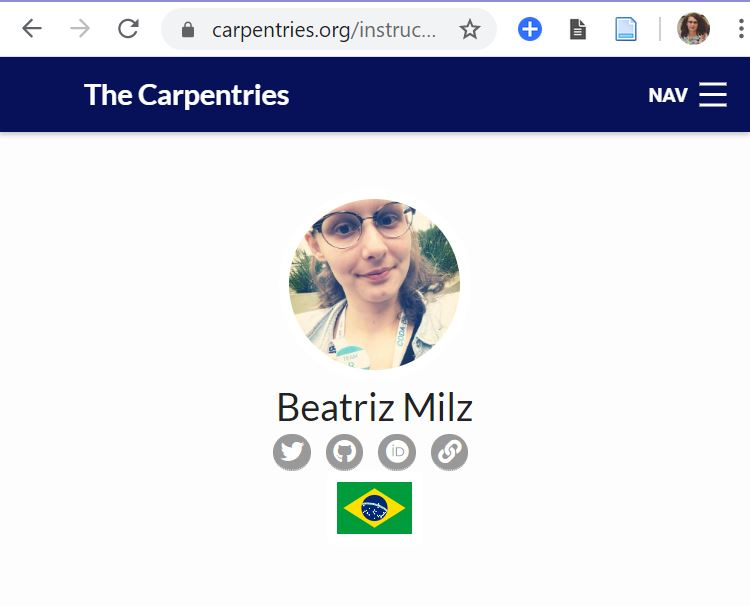

Olá a todes! Neste post, vou contar um pouco sobre o que é a The Carpentries, como conheci este projeto, como foi o treinamento para me tornar uma instrutora, e quais desafios que percebi para o crescimento da comunidade no Brasil.
O que é a The Carpentries?
Logo da The Carpentries. Fonte: The Carpentries
A The Carpentries é uma comunidade global que desenvolve materiais e realiza workshops sobre habilidades de programação (principalmente ciência de dados). Os conteúdos dos workshops são desenvolvidos pela comunidade, através do GitHub. Esses workshops são realizados por instrutores(as) que recebem um treinamento e são certificados.
Leia abaixo a missão e visão da The Carpentries:
Visão: Nossa visão é ser a comunidade inclusiva líder em ensino de dados e habilidades de programação. Missão: A Carpentries desenvolve capacidade global em dados essenciais e habilidades computacionais para conduzir pesquisas eficientes, abertas e reproduzíveis. Treinamos e promovemos uma comunidade ativa, inclusiva e diversificada de alunos e instrutores que promove e modela a importância do software e dos dados na pesquisa. Colaboramos no desenvolvimento de lições abertas e entregamos essas lições usando práticas de ensino baseadas em evidências. Focamos nas pessoas que conduzem e apoiam pesquisas. Fonte: https://carpentries.org/about/
Um ponto que acredito ser indispensável em qualquer comunidade é ter um código de conduta. Na The Carpentries, o código de conduta é continuamente discutido e aprimorado!
A The Carpentries engloba 3 projetos: Data Carpentry, Software Carpentry e Library Carpentry. Cada projeto tem um foco, mas todos criam materiais de ensino e promovem workshops sobre R, Python, Git e muito mais.
Segue abaixo uma lista de materiais sobre R disponíveis nos projetos:
-
Data Carpentry
-
Software Carpentry
-
Library Carpentry
Os materiais são desenvolvidos em inglês. Alguns materiais estão sendo traduzidos para espanhol, sendo uma iniciativa da comunidade da The Carpentries na América Latina. Infelizmente não estão disponíveis materiais em português, pois a comunidade brasileira da The Carpentries ainda é pequena, o que é possível de observar no mapa abaixo:

Mapa de instrutores(as) da Carpentries. Data: Fevereiro/2020 Fonte: Carpentries - Instructors Map.
Como conheci a The Carpentries?
Agora que já expliquei o que é a The Carpentries, vou falar um pouco sobre como eu conheci esse projeto.
No segundo semestre de 2018, quando estava começando a aprender R, os organizadores do “2018 CODATA-RDA School of Research Data Science” entraram em contato com as R-Ladies São Paulo para ministrar voluntariamente um dia e meio de aula de R em inglês. Mesmo com poucos meses de aprendizado, eu declarei interesse em participar. Na ocasião, a Haydee Svab e a Alissa Mune também participaram.
Este curso ocorreu em dezembro de 2018, e utilizou o método da Carpentries de ensino, e também os materiais. O material utilizado foi o Programming with R, da Software Carpentry. Eu ministrei os conteúdos de Boas práticas (Best Practices for Writing R Code), e Relatórios dinâmicos com o knitr (Dynamic Reports with knitr), pois eram os conteúdos que eu tinha mais familiaridade. Foi uma oportunidade muito boa, onde eu aprendi bastante, e também conheci R-Ladies de outros capítulos da América Latina.

R-Ladies no 2018 CODATA: Andrea Tapia - R-Ladies Rio de Janeiro, Natalia da Silva - R-Ladies Montevideo, Alissa Mune - R-Ladies São Paulo, Haydee Svab - R-Ladies São Paulo, eu, e Marcela Alfaro - R-Ladies San José.
Nessa ocasião, a Marce explicou o que é a Carpentries, disse que temos poucos instrutores(as) no Brasil, e me motivou a me inscrever no processo para fazer o treinamento para ser uma instrutora.
Treinamento de instrutora
Nesta página é possível encontrar informações sobre o treinamento. Abaixo vou descrever como foi o meu processo de treinamento.
Registrando o interesse
Depois do CODATA, eu demorei um pouco para começar. A primeira etapa foi preencher este formulário online registrando o interesse em realizar o treinamento. Eu preenchi em março de 2019.
Email de aceite
No início de abril de 2019, recebi o email em que indicava o link para me inscrever no treinamento. No site, são disponíveis diversas opções de datas e horários. Eu me inscrevi para realizar o treinamento em Julho/2019, pois o mesmo tem duração de 2 dias (online), e no primeiro semestre eu estava ocupada com as disciplinas da pós.
Treinamento
O treinamento foi realizado em Julho/2019 através do Zoom (online), com duração de 2 dias. É importante destacar que o treinamento foi inteiramente realizado em inglês. Nesta página é possível ver os conteúdos abordados. O curso foca em boas práticas para o ensino, e foi riquíssimo, contando com atividades práticas. Uma das minhas atividades favoritas foi em grupo: cada pessoa do grupo deveria compartilhar a tela do computador e apresentar uma curta aula, e os participantes do grupo fornecem feedbacks positivos e negativos.
Depois de completar o treinamento, existem 3 etapas para concluir o checkout process: participar de uma reunião da comunidade (community discussion), fazer uma contribuição em algum material da Carpentries, e apresentar uma aula de 5 minutos codando ao vivo (live coding). Essas etapas devem ser realizadas em até 3 meses após participar do treinamento online.
Community discussion
Para participar da community discussion, existe um documento com diversas opções de horários e datas. Eu coloquei meu nome em uma opção de data que eu poderia participar. A reunião é online e dura 1 hora, e participaram pessoas que estão no treinamento, e também instrutores(as) experientes.
Foi muito interessante ouvir as pessoas contando quais foram os aprendizados que tiveram nos workshops oferecidos. Algo que eu achei muito interessante são os relatos do que errado nos workshops, pois assim podemos pensar em formas de prevenir estes problemas em workshops futuros!
Contribuindo com os materiais
Como disse anteriormente, todos os materiais da Carpentries são desenvolvidos e aprimorados pela comunidade, através do GitHub. Então parte do treinamento é realizar uma contribuição, seja com um pull request, respondendo uma issue ou dando alguma sugestão/feedback.
Eu estava estudando uma das lições da Data Carpentry para me preparar para a etapa de live coding. Em Agosto/2019, fiz uma contribuição respondendo uma issue com uma sugestão relacionado à lição Data Analysis and Visualization in R for Ecologists.
Live Coding
Essa foi a última etapa, que realizei em Setembro/2019! A dinâmica é a seguinte: deve-se escolhar uma lição da Carpentries (eu escolhi essa), e estudar o material.
Depois de estudar o conteúdo da lição Data Analysis and Visualization in R for Ecologists, adicionei meu nome e a lição escolhida no documento com as datas disponíveis para o Live Coding.
A avaliação é realizada em uma ligação no Zoom, com outras pessoas que estão em treinamento e uma pessoa avaliadora. A pessoa avaliadora então escolhe em qual tópico do curso a aula com live coding deve começar (por isso é necessário estudar todo o material escolhido!).
Então eu compartilhei a minha tela com todos(as), abri o RStudio, e dei uma aula de 5 minutos em inglês, com live coding, utilizando as práticas que aprendemos no treinamento. Depois de apresentar a aula, é necessário fazer um feedback de si mesmo (positivo e negativo). O feedback que eu fiz para mim mesma é que senti que eu parava para pensar no termo em inglês, e isso prejudicava o ritmo da aula. A pessoa que estava avaliando me tranquilizou e disse que isso não afetou a qualidade da aula. As outras pessoas que estavam em treinamento elaboraram feedbacks, o que me deixou super feliz, já que recebi feedbacks bem legais (um exemplo foi falarem que a minha voz e jeito de falar é animada e deixou as pessoas interessadas no conteúdo apresentado).
Depois de apresentar e receber os feedbacks, também assisti as aulas de outras pessoas em treinamento, e dei feedbacks.
Concluindo o Checkout Process
Depois de cumprir todas essas etapas e informar por email (por exemplo, o link da issue que contribuí), esperei um tempo e verifiquei neste site que já havia cumprido os requisitos. Preenchi os dados que faltavam, e em pouco tempo o meu nome apareceu na lista de instrutores(as): (é preciso utilizar o ctrl+F, pois são muitas pessoas!)

Print screen da página de instrutores(as) da Carpentries. Fonte: Carpentries - Our Instructors.
Desde então, posso organizar e dar aula em Workshops da Carpentries. Eu e o Raniere Silva estamos em contato com ideias de organizar workshops neste ano!
Eu aprendi bastante neste treinamento, o que possibilitou ter um olhar crítico sobre as aulas e materiais que eu (e outras pessoas também) ofereço. Desenvolver a habilidade de fornecer feedbacks construtivos, e praticar live coding foram conteúdos que também gostei muito no treinamento da Carpentries.
Desafios para a comunidade Carpentries no Brasil
Dentre os desafios que percebi, o que mais chama a atenção é que o treinamento para se tornar uma pessoa instrutora é totalmente em inglês. Isso acaba dificultando a participação de muitas pessoas que não falam inglês. Além disso, existem poucos instrutores(as) certificados no Brasil. Consequentemente o material dos workshops estão em inglês, pois ainda não foram traduzidos.
Nos países da América Latina que falam espanhol, as pessoas instrutoras trabalham em equipe para traduzir os materiais dos workshops, e também já ofereceram o treinamento para instrutores(as) em espanhol.
Portanto, se queremos ter materiais e workshops em português, é essencial que a comunidade da Carpentries cresça no Brasil!

Escrevi este post com o objetivo de deixar mais claro como foi este processo. Estou à disposição em caso de outras dúvidas: milz.bea@gmail.com e telegram.
Agradecimentos:
Gostaria de agradecer algumas pessoas que fizeram parte do treinamento e avaliação, ou de alguma forma contribuíram com este processo: Marcela Alfaro, Sarah Stevens, Maneesha Sane, François Michonneau e Raniere Silva.